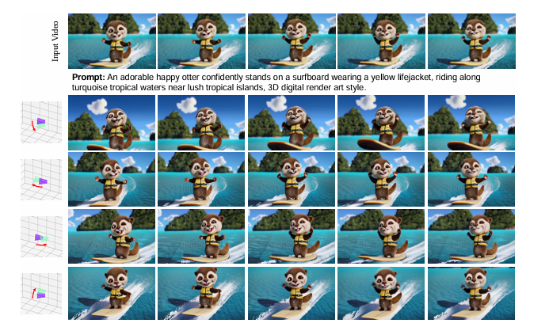
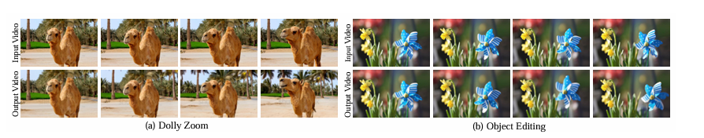

GS-DiT (Bian et al., 2025).
Goal: take a normal single video, understand it in 3D + time, then let us shoot new camera motions, edit objects, even get multiple 'virtual cameras' from that one clip.
GS-DiT: Turning a Normal Video into a Controllable 3D Camera Shot
Zehao Zhang (Yonsei University)
Oct 27, 2025
Based on: “GS-DiT: Advancing Video Generation with Pseudo 4D Gaussian Fields through Efficient Dense 3D Point Tracking,”
Weikang Bian, Zhaoyang Huang, Xiaoyu Shi, Yijin Li, Fu-Yun Wang, and Hongsheng Li (2025).
0. Why should we care?
Think about this very real situation: you shoot a short clip with your phone.
The camera is basically locked — maybe you just hold it in front of your dog at the beach.
Later you wish: “I want a smooth orbit around the dog,”
“can I get a dramatic dolly zoom?”, or even
“give me four angles at once like a movie set.”
But you didn’t film those shots. You have only one boring clip.
GS-DiT says: you can still get those shots.
From a single video, it can:
Move the virtual camera in 3D (pan, tilt, orbit, crane, dolly zoom).
Edit objects in the scene while keeping everything else realistic.
Create multiple camera trajectories for the same moment,
like you had several cameras filming in parallel.
In other words: “shoot once, direct later.”
Project teaser (official GS-DiT demo).
One cute corgi-on-the-beach clip becomes many different cinematic views.
We did not physically fly a drone around the dog.
GS-DiT is inventing those camera paths while keeping the dog, towel, and beach consistent.
(Bian et al., 2025)
This is different from “just upscale my video” or “add a filter.”
GS-DiT tries to understand the scene as 3D over time.
That lets it generate new viewpoints that feel like real camera motion,
not just 2D warping.
1. Quick background: what is a DiT, and why isn’t plain DiT enough?
DiT stands for Diffusion Transformer — basically a diffusion model
where the denoising network is a Transformer instead of a U-Net
(see the “DiT: Scalable Diffusion Models with Transformers” line of work, 2022).
A vanilla DiT takes a noisy latent (an image or a short video clip in latent space),
runs a stack of Transformer blocks with attention, and gradually predicts how
to remove the noise step by step.
A typical Diffusion Transformer (DiT).
You encode frames into latent tokens, add noise, then a Transformer block repeatedly
denoises those tokens using attention and MLP layers.
This works great for generating new images or short videos from prompts,
but “plain” DiT does not actually know real 3D camera geometry.
(Diagram based on DiT-style architectures, arXiv:2212.09748)
Here’s the problem: a standard DiT mostly sees frames as 2D grids.
Even if you tell it “tilt the camera down,” it doesn’t truly know where
“down in 3D space” is.
It might just squash/stretch pixels to imitate motion instead of simulating
a physical camera moving through a 3D scene.
GS-DiT’s main contribution is: give the diffusion model actual 3D+time structure
from the input video, so it can render from new camera poses like a real scene.
2. Core idea of GS-DiT
The paper combines two key ingredients:
Dense 3D point tracking.
Instead of just tracking pixels in 2D, GS-DiT tracks a lot of points in 3D
across the whole video. For each little patch of the scene,
it estimates “this physical point is here in 3D at frame 1, here at frame 2, …”.
So we start to know the scene layout and how it moves.
Pseudo 4D Gaussian field (3D + time).
Using those tracked 3D points plus estimated depth,
GS-DiT builds a lightweight scene representation that changes over time.
You can think of it like a soft 4D “cloud” made of many tiny colored Gaussians:
X, Y, Z in space, plus t for time.
Once we have this pseudo 4D Gaussian field, we can re-render the scene
from any camera pose we choose — even poses that never existed in the
original footage.
Those new rendered views may be rough (holes, noise), but crucially
they are aligned to a physically meaningful camera path in 3D.
 dense 3D point tracking -> pseudo 4D Gaussian field -> Gaussian rendering from new views -> final diffused video." />
Fig 1 (Paper Fig.1). Pipeline overview.
• Left: we start with a normal video and run dense 3D point tracking.
• Middle: we lift those tracked points + depth into a pseudo 4D Gaussian field
(a kind of world model that knows where stuff is in space and time).
• Right: we render that field from a new camera path, then ask a diffusion model
to clean it up into a realistic video.
(Bian et al., 2025)
This is the big shift: “camera control” stops being a vague text instruction
and becomes an explicit camera trajectory in 3D.
GS-DiT can say, “Here’s the path the virtual camera will fly.
Here is what that path should see, according to our 4D Gaussian world.”
Then diffusion turns that rough prediction into photorealistic frames.
Why tracking quality matters
If the 3D tracking is wrong, everything collapses:
geometry tears, backgrounds float, objects smear.
So the paper benchmarks their tracking system against prior work,
both in 2D point tracking and in 3D point tracking.
Better tracking = more stable new views.
Tables 1 & 2 (Paper Tables 1 & 2).
GS-DiT’s dense point tracking matches or beats strong baselines on datasets like TAPVid,
TAPVid-3D, DriveTrack, Aria, etc.
Metrics like AJ, OA, APD, 3D-AJ measure “are we following the same physical point
over time, and in 3D?”
High-quality tracking is the foundation that lets the model move the camera later
without everything falling apart.
(Bian et al., 2025)
3. How GS-DiT is trained
Training-wise, GS-DiT doesn’t just guess out of nowhere.
It uses two aligned video streams during training:
Input video: the original camera view you actually filmed.
Condition video: a novel view rendered from the pseudo 4D Gaussian field,
following some new camera pose (for example, orbiting left or tilting down).
Both videos get encoded by a 3D VAE encoder into latent tensors.
Those latents are concatenated and then fed into a Diffusion Transformer.
Parts of the encoder are frozen, parts are learnable — so the model learns:
“Given this target camera path, produce clean frames that look like the same scene
from that new path.”
Fig 2 (Paper Fig.2). Training / conditioning.
Top row: the “condition video,” which comes from the new camera pose we want.
Bottom row: the original input video.
Both are turned into latent features by a 3D VAE encoder.
The Diffusion Transformer (DiT) then learns to denoise and produce the final output.
(Bian et al., 2025)
Put simply: GS-DiT learns to finish the shot.
The 4D Gaussian field gives a rough multi-view guess.
The diffusion model learns to polish that guess into a stable, pretty video that
actually follows the requested camera motion.
Appearance consistency over viewpoints and time
Another thing GS-DiT cares about: the same object should look like itself,
even if we rotate around it.
For example, if you’re orbiting around an otter surfing on a board,
the otter shouldn’t suddenly change style frame-to-frame.
Fig 3 (Paper Fig.3). Multi-view / multi-time consistency.
The same subject (here an otter-like surfing character) is seen from several
new camera angles. The outfit, style, and pose stay consistent.
This shows GS-DiT is not just hallucinating random new objects each time —
it’s keeping track of the same 3D creature over time.
(Bian et al., 2025)
4. What can GS-DiT actually do?
Let’s look at concrete abilities from the paper and project page.
Each demo starts with a boring real clip and ends with something that looks like
a planned film shot.
4.1 Camera pose control
We can literally say:
“Tilt the camera down,”
or “move the virtual camera to a new position,”
and GS-DiT will render what that new camera should see.
The scene is still the same bubble-on-branch, or the same desk clock —
just shot from a new angle that never existed in the original footage.
Camera Pose Control (project demo).
Top pair: an ice bubble on a frozen branch.
Bottom pair: a desk clock.
Left = original handheld shot.
Right = GS-DiT’s “move/tilt the camera” version.
The background and lighting still feel like the same place.
Camera Pose Control – Bubble Scene
Input Video
Output Video (new virtual camera path)
Camera Pose Control – Clock Scene
Input Video
Output Video (tilt / rotate down)
4.2 Dolly zoom
A dolly zoom is a famous film trick: the camera physically moves forward
while the lens zooms out, so the subject stays roughly the same size,
but the background stretches in a dramatic way (think Hitchcock / Vertigo shot).
That normally needs careful camera rigging.
GS-DiT can fake that cinematic effect from a plain handheld-looking clip.
Dolly Zoom (project demo).
Left row: original camel clip.
Right row: GS-DiT output with a dolly zoom style move.
The camel stays calm and centered, while the background “pushes” and bends
in that classic thriller-movie way.
(Bian et al., 2025)
Dolly Zoom – Camel Scene
Input Video
Output Video (dolly zoom style)
4.3 Object editing in video
GS-DiT can also edit an object — for example, change the look of a spinning toy windmill —
while keeping the rest of the frame, depth, lighting, and “camera feel”
consistent with reality.
Object Editing (project demo).
We alter the color / texture / appearance of the little windmill blades.
The flower garden and bokeh background stay believable.
This is not frame-by-frame Photoshop; it’s a scene-level edit.
Object Editing – Windmill Scene
Input Video
Output Video (edited object)
The paper groups shots like dolly zoom and object editing together
under “controllable video generation”: we’re not just passively watching;
we’re actively directing camera and content.

Fig 4 (Paper Fig.5).
Left: Dolly Zoom effect.
Right: Object Editing.
These are creative tools for filmmakers: one changes how the scene is shot,
the other changes what’s actually in the shot.
(Bian et al., 2025)
4.4 Multi-camera shooting from one clip
Maybe the most “movie studio” result:
you give GS-DiT one drone-ish coastal clip.
It then produces several different camera trajectories for that same moment,
as if you had four cameras in the air at the same time.
Multi-camera Shooting (project demo).
Left: the original coastline shot.
Right: three distinct “virtual cameras”: rotate left, rotate right,
rotate down-left.
You can cut between these angles in editing even though they were never filmed.
(Bian et al., 2025)
Multi-camera Shooting – Coastal Scene
Input Video
Output Trajectory 1
Output Trajectory 2
Output Trajectory 3
5. How does GS-DiT compare to previous methods?
The paper compares GS-DiT to strong baselines like GCD and MonST3R.
Older methods often “break” when you ask for a new camera motion:
backgrounds tear open into black voids, objects smear or get chopped off,
geometry pops in and out.
GS-DiT stays more stable.
It keeps the subject intact (a swan, a cow, a person, even that surfing otter),
and it fills in plausible surroundings instead of giant holes.
Fig 5 (Paper Fig.4). Qualitative comparison.
Columns (left→right): the original input video, the recovered camera poses,
GS-DiT’s output, and two baselines (GCD, MonST3R).
Rows: swan on water, bike rider, driving car, cow in a field,
portrait of an old man, the surfing otter.
GS-DiT produces cleaner, more complete novel views with fewer black gaps.
(Bian et al., 2025)
They also report quantitative metrics for multi-camera / multi-trajectory generation:
PSNR and SSIM should go up (higher = closer to ground truth),
LPIPS should go down (lower = perceptually closer).
GS-DiT wins on these across datasets like DAVIS, Sora, and Pixabay.
Table 3 (Paper Table 3).
GS-DiT beats GCD and MonST3R in PSNR↑ / SSIM↑ / LPIPS↓ for generated novel views.
Translation: the new camera shots are not only cooler — they’re measurably closer
to what a real camera at that angle should have seen.
(Bian et al., 2025)
6. The pipeline in plain steps
Here is GS-DiT as a recipe:
Start with a normal video.
Track dense points in 3D across time. Estimate depth.
Now the model has a rough idea of scene geometry and motion.
Build a pseudo 4D Gaussian field.
This is the “world model”: a time-varying set of colored 3D Gaussians
that says “what is where” at each frame.
Pick any new camera path.
Orbit around the subject, tilt down, do a dolly zoom, etc.
This path is full 6-DoF (3D location + 3D rotation over time),
just like a real camera rig.
Render that path from the 4D field.
The render may look incomplete (holes, noise),
but it’s physically aligned to your requested camera motion.
Refine with a Diffusion Transformer.
A DiT denoiser turns that rough render into a clean, stable,
photorealistic video clip.
Repeat for more paths or edits.
You can now generate multiple “virtual takes” of the same moment,
or edit specific objects, without reshooting anything.
So GS-DiT is basically an automatic mini film crew:
it understands your scene in 3D + time,
it lets you direct the camera afterward,
and it outputs shots that look like you actually filmed them.
7. Why this matters (my take)
This work is one step toward “text-to-world,” but grounded in real footage.
We’re moving from “please generate a pretty clip” to
“please give me this exact shot.”
For creators and video editors:
you can shoot something fast — even handheld —
and later ask for pro-looking moves (orbit, dolly zoom, crane),
or clean object edits, without renting gear or doing reshoots.
For AR / VR / robotics:
being able to reconstruct a controllable 3D+time scene from a short casual clip
is huge. It means you can drop a virtual camera anywhere,
not just replay the original path.
There are still limits:
if the video never shows the back of an object, GS-DiT has to hallucinate it.
And diffusion is still expensive to run.
But the direction is very clear:
we’re leaving the world of “I filmed this clip.”
We’re entering “I filmed some raw material, and now I can direct it however I want.”